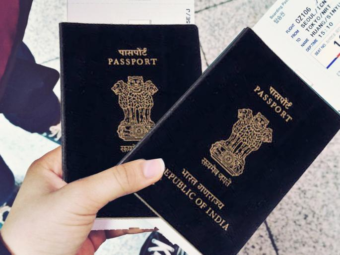

SOLUTION BELOW
The potential solutions to the above challenge is a mobile application our group is working upon. The app works in a way that both people who have lost and picked any material items can access this free platform, post what they have lost, and what they have been able to pick along the way, without having to pay anything, as it would be if they are to pay to the advertising media such as television stations, radio stations and more. Users must register on the platform for free to see what lost or found items others have been able to post, and if an item is found to belong to someone, there are leading procedures for communication on item recovery.PEOPLE'S EXPERIENCE
Many people have endedup being depressed and overwelmed after loosing their property , and some people dont know what to do with the property they have picked hence misplacing them.
Our group realised that this was a great problem and we decided to come up with a problem solving application which can atleast help to reduce such issues.